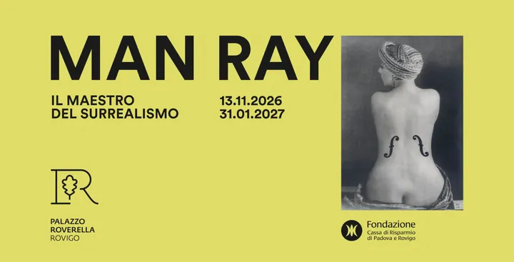

da ven 13 nov a dom 31 gen
Man Ray. Il Maestro del surrealismo
Palazzo Roverella rinnova la sua vocazione per la grande fotografia dedicando una mostra a Man Ray , sperimentatore poliedrico che sviluppa la sua ricerca prima a New York e poi nell’ambiente surrealista parigino. Le sue invenzioni visive hanno un impatto dirompente, capace di…
 Indicazioni
Indicazioni
- Costi e prenotazioni
- Costo non indicato · Prenotazione non indicata
- Programma
- Programma da verificare. Apri la fonte ufficiale per orari e possibili aggiornamenti.
- In caso di maltempo
- Nessuna indicazione specifica pubblicata.
- Note
- Acquisito automaticamente dalla fonte.
L’EVENTO
Descrizione completa
Palazzo Roverella rinnova la sua vocazione per la grande fotografia dedicando una mostra a Man Ray , sperimentatore poliedrico che sviluppa la sua ricerca prima a New York e poi nell’ambiente surrealista parigino. Le sue invenzioni visive hanno un impatto dirompente, capace di trasformare la materia fotografica in pura poesia visiva: la mostra offre un’immersione nella creatività dell’artista e uno sguardo ravvicinato all’arte delle Avanguardie e ai suoi grandi protagonisti.
Man Ray, al secolo Emmanuel Radnitzky , nasce nel 1890 a Filadelfia, ma presto si trasferisce con la famiglia a Brooklyn, dove si avvicina alle avanguardie artistiche newyorkesi. L’incontro con Marcel Duchamp è decisivo. Nel 1921 lascia New York per imbarcarsi alla volta di Parigi, dove entra nel cuore delle avanguardie europee.
Pittore, fotografo, designer, cineasta e creatore di oggetti, Man Ray trova nel Dadaismo e nel Surrealismo lo spazio ideale per attraversare tecniche e linguaggi differenti senza lasciarsi imprigionare da definizioni. Un’attitudine che emerge persino nel modo in cui parlava della sua passione per gli scacchi: non si considerava uno “scacchista”, ma semplicemente «uno che muove i pezzi». Piuttosto che aderire a una disciplina, Man Ray preferiva esplorarne liberamente le possibilità.
È questa libertà a guidare il percorso della mostra che Palazzo Roverella dedica a Man Ray. Il maestro del Surrealismo .
La mostra che Palazzo Roverella dedica a Man Ray riunisce circa 300 opere tra fotografie, disegni, litografie, oggetti e documenti storici. Un percorso per scoprire un artista libero e ironico che per tutta la vita ha esplorato tecniche e linguaggi facendo della libertà il centro della propria ricerca.
Per Man Ray, la realtà non è qualcosa da riprodurre fedelmente, ma un punto di partenza da trasformare. Un volto può diventare una maschera, un corpo uno strumento musicale, un oggetto quotidiano qualcosa di enigmatico e inatteso.
IL PROGRAMMA
Programma e orari
Appuntamenti raccolti dalle fonti elencate. Dove manca un orario, non è ancora disponibile in questa scheda.
Programma pubblicato
- 2026-11-13 — 2027-01-31 ·
INFORMAZIONI UTILI
Prima di partire
- Controllare la fonte prima di partire.
ORGANIZZAZIONE